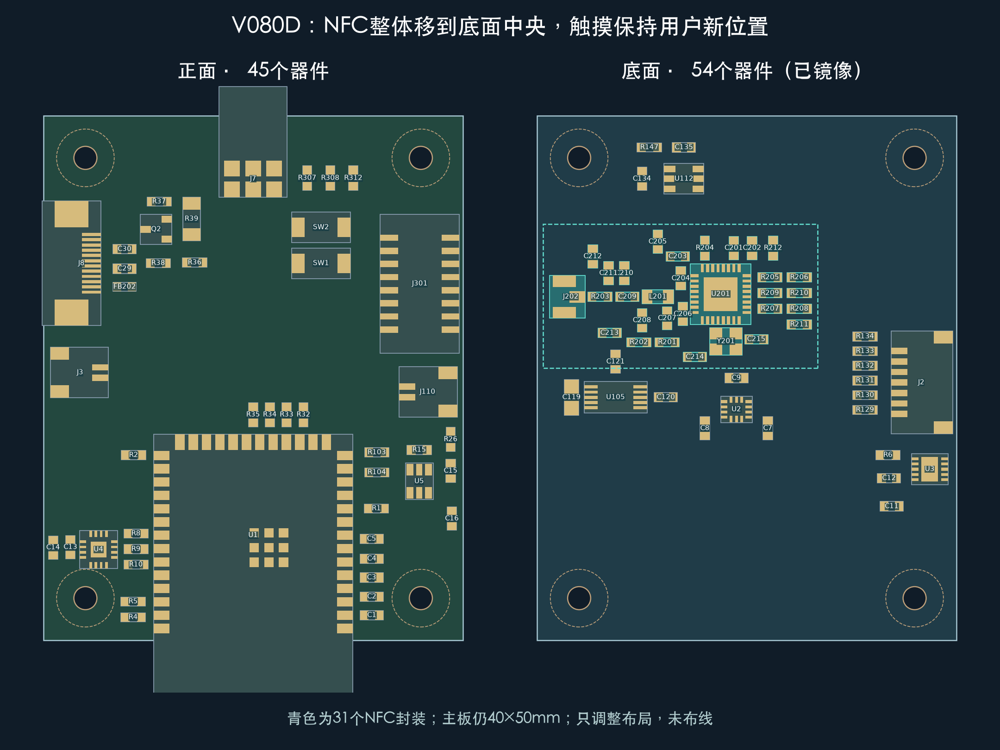
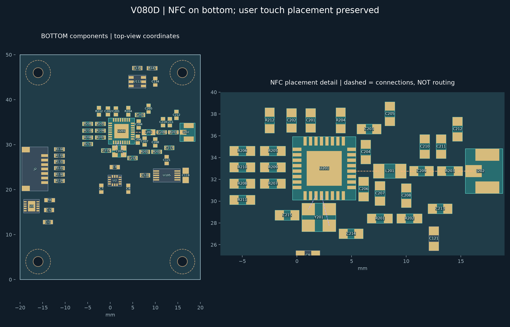

器灵 · 2026-10-27 · 保留用户最新触摸位置中央放得下，NFC已整体移到底面
31个NFC封装全部底面40×50mm保持未布线
NFC整组占位约25×13mm，主板仍99个封装；正面从76件减到45件。你刚移动的触摸芯片、电容、电阻及其余68件位姿全部保留。天线接口J202放到底面靠右板边。

按连接顺序安排，减少绕行
射频链路由芯片朝右依次经过电感、匹配电容和阻尼电阻到天线座；晶振紧邻芯片。RF主链路与两根晶振连接的直线通道没有其他器件挡路。

详图沿用从正面透视的工程坐标；橙色/紫色虚线为连接关系，不是实际走线。
布线优先级：RF与接收支路 → 晶振与地 → 供电/去耦 → I²C、复位、地址。VMID到C207仍需绕过C206；触摸电极线沿左侧通往下方U3，避免穿过RF区。NFC区域须有连续接地参考。
检查结果
翻面后逐焊盘网络、实体坐标和导出工程核验通过；封装、跨面通孔、板边及螺丝包络无冲突。所有原理图页面、电源板、剑身板保持。原理图保留2条既有UART提示，PCB仅348条未布线连接提示；三板没有活动走线、过孔或覆铜。
目前是布局交付。线圈/线缆/外壳调谐、I²C地址、读距与底面插头装配仍待验证，未生成制造文件。
交付
完整嘉立创工程 · NFC坐标表 · 调整与布线说明 · 检查记录
在线工程名仍为Spirit_V080B_Three_Board_SmallSide_20261027；本轮板上标识和导出版本为V080D。